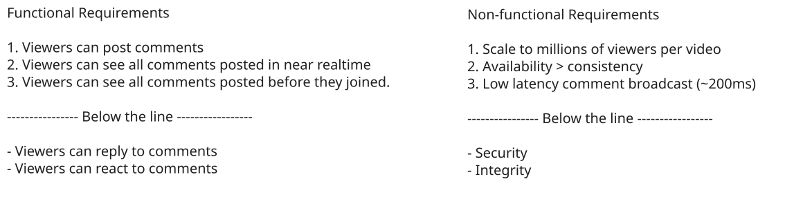
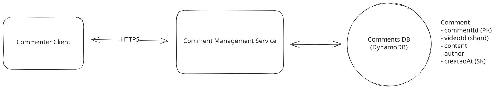
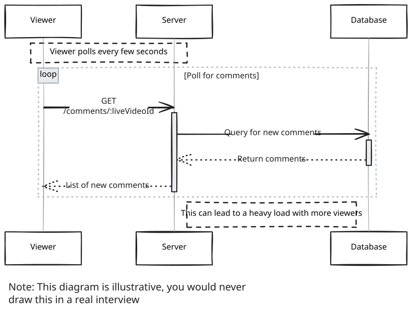
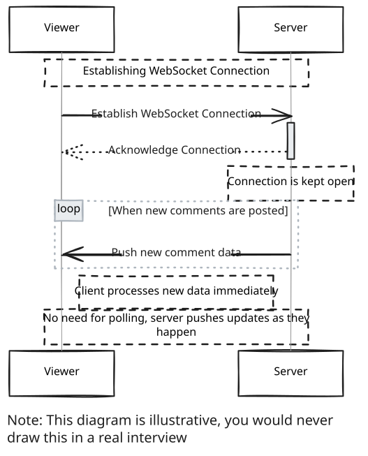
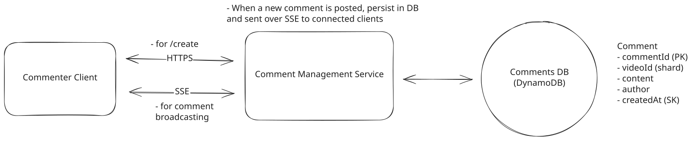
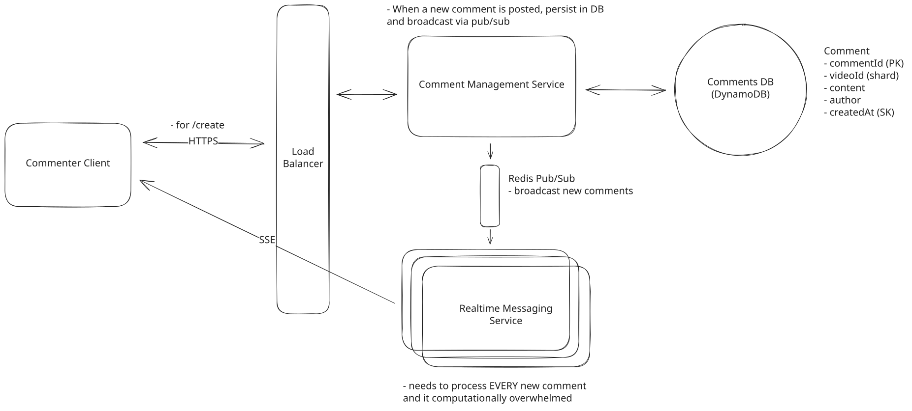
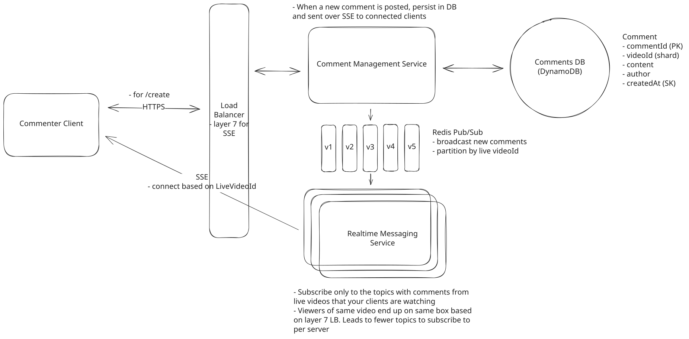
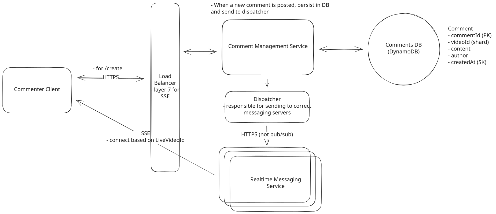

Common Problems
FB Live Comments
Real-time Updates
Understanding the Problem
📹 What are Facebook Live Comments?
Facebook Live Comments is a feature that enables viewers to post comments on a live video feed. Viewers can see a continuous stream of comments in near-real-time.
Functional Requirements
Core Requirements
- Viewers can post comments on a Live video feed.
- Viewers can see new comments being posted while they are watching the live video.
- Viewers can see comments made before they joined the live feed.
Below the line (out of scope):
- Viewers can reply to comments
- Viewers can react to comments

Non-Functional Requirements
Core Requirements
- The system should scale to support millions of concurrent videos and thousands of comments per second per live video.
- The system should prioritize availability over consistency, eventual consistency is fine.
- The system should have low latency, broadcasting comments to viewers in near-real time (< 200ms end-to-end latency under typical network conditions)
Below the line (out of scope):
- The system should be secure, ensuring that only authorized users can post comments.
- The system should enforce integrity constraints, ensuring that comments are appropriate (ie. not spam, hate speech, etc.)
🤩 Fun Fact!
Humans generally perceive interactions as real-time if they occur within 200 milliseconds. Any delay shorter than 200 milliseconds in a user interface is typically perceived as instantaneous so when developing real-time systems, this is the target latency to aim for.
🤩 Fun Fact!
The most popular Facebook Live video was called Chewbacca Mom which features a mom thoroughly enjoying a plastic, roaring Chewbacca mask. It has been viewed over 180 million times. Check it out here.
Here's how your requirements section might look on your whiteboard:

FB Live Comments Requirements
The Set Up
Planning the Approach
Before you move on to designing the system, it's important to start by taking a moment to plan your strategy. Fortunately, for these common product style system design questions, the plan should be straightforward: build your design up sequentially, going one by one through your functional requirements. This will help you stay focused and ensure you don't get lost in the weeds as you go. Once you've satisfied the functional requirements, you'll rely on your non-functional requirements to guide you through layering on depth and complexity to your design.
Defining the Core Entities
I like to begin with a broad overview of the primary entities. Initially, establishing these key entities will guide our thought process and lay a solid foundation as we progress towards defining the API. Think of these as the "nouns" of the system.
Why just the entities and not the whole data model at this point? The reality is we're too early in the design and likely can't accurately enumerate all the columns/fields yet. Instead, we start by grasping the core entities and then build up the data model as we progress with the design.
For this particular problem, we only have three core entities:
- User: A user can be a viewer or a broadcaster.
- Live Video: The video that is being broadcasted by a user (this is owned and managed by a different team, but is relevant as we will need to integrate with it).
- Comment: The message posted by a user on a live video.
In your interview, this can be as simple as a bulleted list like:
FB Live Comments Core Entities
Now, let's carry on to outline the API, tackling each functional requirement in sequence. This step-by-step approach will help us maintain focus and manage scope effectively.
API or System Interface
We'll need a simple POST endpoint to create a comment.
POST /comments/:liveVideoId
Header: JWT | SessionToken
{
"message": "Cool video!"
} Note that the userId is not passed in the request body. Instead, it is a part of the request header, either by way of a session token or a JWT. This is a common pattern in modern web applications. The client is responsible for storing the session token or JWT and passing it in the request header. The server then validates the token and extracts the userId from it. This is a more secure approach than passing the userId in the request body because it prevents users from tampering with the request and impersonating other users.
We also need to be able to fetch past comments for a given live video.
GET /comments/:liveVideoId?cursor={last_comment_id}&pageSize=10&sort=descPagination will be important for this endpoint. More on that later when we get deeper into the design.
High-Level Design
To get started with our high-level design, let's begin by addressing the first functional requirement.
1) Viewers can post comments on a Live video feed
First things first, we need to make sure that users are able to post a comment.
This should be rather simple. Users will initiate a POST request to the POST /comments/:liveVideoId endpoint with the comment message. The server will then validate the request and store the comment in the database.

FB Live Comments Create Comment
- Commenter Client: The commenter client is a web or mobile application that allows users to post comments on a live video feed. It is responsible for authenticating the user and sending the comment to the Comment Management Service.
- Comment Management Service: The comment management service is responsible for creating and querying comments. It receives comments from the commenter client and stores them in the comments database. It will also be responsible for retrieving comments from the comments database and sending them to the viewer client -- more on that later.
- Comments Database: For the comments database, we'll choose DynamoDB because it is a fast, scalable, and highly available database. It's is a good fit for our use case because we are storing simple comments that don't require complex relationships or transactions, though, other databases like Postgres or MySQL would work here as well.
Let's walk through exactly what happens when a user posts a new comment.
- The users drafts a comment from their device (commenter client)
- The commenter client sends the comment to the comment management service via the POST /comments/:liveVideoId API endpoint.
- The comment management service receives the request and stores the comment in the comments database.
Great, that was easy, but things get a little more complicated when we start to consider how users will view comments.
2) Viewers can see new comments being posted while they are watching the live video.
Now that we've handled comment creation, we need to tackle the challenge of comment distribution - ensuring that when one user posts a comment, all other viewers of the live video can see it.
We can start with the simplest approach: polling.
A working, though naive, approach is to have the clients poll for new comments every few seconds. We would use the GET /comments/:liveVideoId?since={last_comment_id} endpoint, adding a since parameter to the request that points to the last comment id that the client has seen. The server would then return all comments that were posted after the since comment and the client would append them to the list of comments displayed on the screen.

Polling
This is a start, but it doesn't scale. As the number of comments and viewers grows, the polling frequency will need to increase to keep up with the demand. This will put a lot of strain on the database and will result in many unnecessary requests (since most of the times there will be no new comments to fetch). In order to meet our requirements of "near real-time" comments, we would need to poll the database every few milliseconds, which isn't feasible.
In your interview, if you already know the more accurate, yet complex, solution, you can jump right to it. Just make sure you justify your decision and explain the tradeoffs.
In the case that you are seeing a problem for the first time, starting simple like this is great and sets a foundation for you to build upon in the deep dives.
3) Viewers can see comments made before they joined the live feed
When a user joins a live video, they need two things:
- They should immediately start seeing new comments as they are posted in real-time
- They should see a history of comments that were posted before they joined
For the history of comments, users should be able to scroll up to view progressively older comments - this UI pattern is called "infinite scrolling" and is commonly used in chat applications.
We can fetch the initial set of recent comments using our GET /comments/:liveVideoId endpoint. While we could use the since parameter we added earlier, that would give us comments newer than a timestamp - the opposite of what we want for loading historical comments. What we really want is something that will "give me the N most recent comments that occurred before a certain timestamp".
To do that, we can introduce pagination. Pagination is a common technique used to break up a large set of results into smaller chunks. It is typically used in conjunction with infinite scrolling to allow users to load more results as they scroll down the page.
Whenever you have a requirement that involves loading a large set of results, you should consider pagination.
When it comes to implementing pagination, there are two main approaches: offset pagination and cursor pagination.
Approach
The simplest approach is to use offset pagination. Offset pagination is a technique that uses an offset to specify the starting point for fetching a set of results. Initially, the offset is set to 0 to load the most recent comments, and it increases by the number of comments fetched each time the user scrolls to load more (known as the page size). While this approach is straightforward to implement, it poses significant challenges in the context of a fast-moving, high-volume comment feed.
Example request: GET /comments/:liveVideoId?offset=0&pagesize=10
Challenges
First, offset pagination is inefficient as the volume of comments grows. The database must count through all rows preceding the offset for each query, leading to slower response times with larger comment volumes. Most importantly, offset pagination is not stable. If a comment is added or deleted while the user is scrolling, the offset will be incorrect and the user will see duplicate or missing comments.
Approach
A better approach is to use cursor pagination. Cursor pagination is a technique that uses a cursor to specify the starting point for fetching a set of results. The cursor is a unique identifier that points to a specific item in the list of results. Initially, the cursor is set to the most recent comment, and it is updated each time the user scrolls to load more. This approach is more efficient than offset pagination because the database does not need to count through all rows preceding the cursor for each query (assuming we built an index on the cursor field). Additionally, cursor pagination is stable, meaning that if a comment is added or deleted while the user is scrolling, the cursor will still point to the correct item in the list of results.
Example request: GET /comments/:liveVideoId?cursor={last_comment_id}&pageSize=10
Since we chose DynamoDB for our comments database, we can use the last_comment_id as the cursor. The query will look something like this:
{
"TableName": "comments",
"KeyConditionExpression": "liveVideoId = :liveVideoId AND commentId < :cursor",
"ExpressionAttributeValues": {
":liveVideoId": "liveVideoId",
":cursor": "last_comment_id"
},
"ScanIndexForward": false,
"Limit": "pageSize"
}Challenges
While cursor pagination reduces database load compared to offset pagination, it still requires a database query for each new page of results, which can be significant in a high-traffic environment like ours.
Cursor based pagination is a better fit for our use case. Unlike offset pagination, it's more efficient as we don't need to scan through all preceding rows. It's stable - new comments won't disrupt the cursor's position during scrolling. It works well with DynamoDB's key-based queries, and it scales better since performance remains consistent as comment volume grows.
Potential Deep Dives
1) How can we ensure comments are broadcasted to viewers in real-time?
Our simple polling solution was a good start, but it's not going to pass the interview. Instead of having the client "guess" when new comments are ready and requesting them, we can use a push based model. This way the server can push new comments to the client as soon as they are created.
There are two main ways we can implement this. Websockets and Server Sent Events (SSE). Let's weigh the pros and cons of each.
Pattern: Real-time Updates
Facebook Live Comments showcases the real-time updates pattern at massive scale. Whether it's broadcasting comments via Server-Sent Events, distributing updates through pub/sub systems, or coordinating across multiple servers, the same principles apply to any system requiring instant data delivery, from collaborative editing to live dashboards to gaming platforms.
Approach
Websockets are a two-way communication channel between a client and a server. The client opens a connection to the server and keeps it open. The server keeps a connection open and sends new data to the client without requiring additional requests. When a new comment arrives, the Comment Management Server distributes it to all clients, enabling them to update the comment feed. This is much more efficient as it eliminates polling and enables the server to immediately push new comments to the client upon creation.
Challenges
Websockets are a good solution, and for real-time chat applications that have a more balanced read/write ratio, they are optimal. However, for our use case, the read/write ratio is not balanced. Comment creation is a relatively infrequent event, so while most viewers will never post a comment, they will be viewing/reading all comments.
Because of this imbalance, it doesn't make sense to open a two-way communication channel for each viewer, given that the overhead of maintaining the connection is high.

Websockets
Approach
A better approach is to use Server Sent Events (SSE). SSE is a persistent connection that operates over standard HTTP, making it simpler to implement than WebSockets. The server can push data to the client in real-time, while client-to-server communication happens through regular HTTP requests.
This is a better solution given our read/write ratio imbalance. The infrequent comment creation can use standard HTTP POST requests, while the frequent reads benefit from SSE's efficient one-way streaming.
Challenges
SSE introduces several infrastructure challenges that need careful consideration. Some proxies and load balancers lack support for streaming responses, leading to buffering issues that can be difficult to track down. Browsers also impose limits on concurrent SSE connections per domain, which creates problems for users trying to watch multiple live videos simultaneously. The long-lived nature of SSE connections complicates monitoring and debugging efforts.

SSE
Here is our updated flow:
- User posts a comment and it is persisted to the database (as explained above)
- In order for all viewers to see the comment, the Comment Management Service will send the comment over SSE to all connected clients that are subscribed to that live video.
- The Commenter Client will receive the comment and add it to the comment feed for the viewer to see.
Astute readers have probably recognized that this solution does not scale. You're right. We'll get to that in the next deep dive.
2) How will the system scale to support millions of concurrent viewers?
We landed on Server Sent Events (SSE) being the appropriate technology. Now we need to figure out how to scale it. With SSE, we need to maintain an open connection for each viewer. Modern servers can handle large numbers of concurrent connections, commonly in the range of 100k, but system resources like CPU, memory, and file descriptors become the bottleneck before you hit any theoretical limit. If we want to support many millions of concurrent viewers, we simply won't be able to do it on a single machine. We must scale horizontally by adding more servers.
This deep dive tackles scaling in two parts. First, we'll solve the coordination problem. When viewers of the same video are spread across multiple servers, how do those servers share comments with each other? Then we'll address what happens when a single video goes mega-viral with millions of viewers and thousands of comments per second, a scenario where even our best coordination solutions start to break down.
Contrary to a common misconception, the capacity isn't limited to 65,535 connections. That number refers to the range of port numbers, not the number of connections a single server port can handle. Each TCP connection is identified by a unique combination of source IP, source port, destination IP, and destination port. With proper OS tuning and resource allocation, a single listening port can handle hundreds of thousands or even millions of concurrent SSE connections.
Part 1: Server Coordination
Let's understand the core challenge with horizontal scaling. When we add more servers to handle the load, viewers watching the same live video may end up connected to different servers:
- UserA is watching Live Video 1 and connected to Server 1
- UserB is watching Live Video 1 but connected to Server 2
Now imagine a new comment is posted on Live Video 1. If this comment request hits Server 1, it can easily send the comment to UserA since they're directly connected. But Server 1 has no way to send it to UserB, who is connected to Server 2. This is our key challenge, and we need to ensure all viewers see new comments regardless of which server they're connected to.
Approach
The first thing we need to do is separate out the write and read traffic by creating Realtime Messaging Servers that are responsible for sending comments to viewers. We separate this out because the write traffic is much lower than the read traffic and we need to scale them independently.
To distribute incoming traffic evenly across servers, we use a simple load balancing algorithm like round robin. Upon connecting to a Realtime Messaging Server, the client informs the server which live video it's watching. The server maintains a mapping in local memory:
{
"liveVideoId1": ["sseConnection1", "sseConnection2"],
"liveVideoId2": ["sseConnection3", "sseConnection4"]
}When a new comment is created, how does each server learn about it? The most common solution is pub/sub. The comment management service publishes a message to a channel whenever a new comment is created, and all Realtime Messaging Servers subscribe to this channel. They then send the comment to all viewers watching that live video.
Challenges
This approach works, but it's inefficient at scale. Each Realtime Messaging Server processes every comment across all live videos, even if none of its connected viewers are watching that video. This leads to wasted compute and becomes impractical at Facebook scale.

Simple Pub/Sub
Approach
We can improve efficiency by partitioning the comment stream into different channels. Each Realtime Messaging Server subscribes only to the channels it needs, determined by the viewers connected to it.
Since having a channel per live video would consume a lot resources (and may be infeasible with systems like Kafka), we use a hashing function to distribute across N channels: hash(liveVideoId) % N. This ensures a reasonable upper bound on channel count.
But there's still a problem. With round-robin load balancing, a server could end up with viewers subscribed to many different streams, forcing it to subscribe to many channels and replicating the inefficiency we tried to avoid.
The solution is intelligent routing. A Layer 7 load balancer can use consistent hashing based on the liveVideoId to route viewers of the same video to the same server. By inspecting the request path or headers, NGINX or Envoy can ensure related viewers stay together. Alternatively, we can store a dynamic mapping of liveVideoId to server in a coordination service like Zookeeper, giving us more flexibility at the cost of operational complexity.
Challenges
The main challenge is managing the coordination between load balancing and pub/sub subscriptions. When a server's viewer composition changes, it needs to update its subscriptions accordingly. And when servers scale up or down, the routing mappings need to stay in sync.

Pub/Sub with Layer 7 Load Balancer
Approach
An alternative approach inverts the pub/sub model entirely. Instead of servers subscribing to topics and receiving comments as they're published, we introduce a Dispatcher Service that directly routes each new comment to the correct Realtime Messaging Servers.
When a new comment comes in, the comment management service asks the Dispatcher: "Which servers have viewers watching this video?" The Dispatcher maintains a dynamic map of which servers are responsible for which videos, kept in sync via heartbeats and registration protocols as servers join or leave. It then forwards the comment directly to those servers.
This approach eliminates the need to manage pub/sub subscriptions, centralizes the routing logic so it's easier to reason about, and lets us add sophisticated routing rules (like load-based routing) without changing the Realtime Messaging Servers.
Multiple Dispatcher instances can run in parallel behind a load balancer, all consulting the same coordination data (Zookeeper or etcd) for consistency.

Dispatcher Service
Challenges
The main challenge is keeping the Dispatcher's mapping accurate during rapid changes, like a viral stream causing a sudden influx of viewers. The Dispatcher must refresh its view of the system frequently, and multiple Dispatcher instances need coordinated cache invalidation to prevent stale mappings.
Advanced candidates may point out the tradeoffs in different pub/sub systems. Kafka is highly scalable and fault-tolerant, but struggles with dynamic subscription patterns like users switching between videos. Redis pub/sub provides low latency and handles dynamic subscriptions well, making it a solid choice here. The fire-and-forget nature of Redis pub/sub isn't a problem because we're persisting comments to the database anyway. If a viewer misses a comment during a brief disconnect, the catch-up mechanism we'll discuss later handles recovery.
Both the pub/sub approach with viewer co-location and the dispatcher service approach are great solutions for the coordination problem. Pub/sub is typically easier with fewer corner cases, so it's the one I'd reach for in an interview.
Part 2: Mega-Streams
Our coordination solutions work well for typical live videos. But what happens when the World Cup final goes live and suddenly hundreds of millions of viewers are watching the same stream, with comments pouring in at thousands per second?
This is a fundamentally different problem. If a mega-stream has 5,000 comments per second and the average comment is 4 words, that's equivalent to reading War and Peace in under 30 seconds. If we show the last 20 messages on screen, each message appears for about 4 milliseconds before being pushed off. No human can actually read that fast.
When comments flow this fast, the traditional goals of real-time systems (low latency, reliable delivery of every message) become less important. Users can't meaningfully engage with individual comments anyway, instead, they're experiencing a "vibe" of collective participation rather than reading a conversation.
Approach
An improved approach to streaming over every comment is to recognize that users don't need to see every comment. They just need to see enough comments to feel the energy of the crowd. We can sample the comment stream and only deliver a subset to each viewer.
As comments arrive, we maintain a sampling rate that adjusts based on comment velocity. When comments flow at 100 per second, we might sample 50%. When they hit 5,000 per second, we sample just 1-2%. Each viewer receives roughly the same number of comments per second regardless of how fast they're actually being posted, creating a consistent and readable experience.
We can get clever with our sampling strategy too. Rather than pure random sampling, we can prioritize comments from users the viewer follows, comments getting reactions, or comments from verified accounts. This ensures the "best" comments have a higher chance of being seen.
Challenges
While sampling reduces load significantly, we're still maintaining persistent SSE connections to millions of concurrent viewers and pushing updates in real-time. The infrastructure costs, while reduced, remain substantial.
Approach
The most elegant solution for mega-streams is to fundamentally change our delivery model. Instead of pushing comments in real-time over SSE, we switch to a pull-based model using our existing CDN infrastructure.
The architecture works like this. On the server side, we maintain a ring buffer of the most recent 100-200 comments for each mega-stream. Every second (or more frequently), we take a snapshot of this buffer and write it to Redis or directly to our CDN origin. The CDN distributes this snapshot globally, caching it at edge locations.
On the client side, instead of maintaining an SSE connection, the app polls the CDN every second for the latest snapshot. When a new snapshot arrives, the client doesn't dump all the comments on screen at once (that would look janky). Instead, it smoothly animates the new comments, spacing them out over the polling interval to simulate a continuous stream. The client can even use the timestamps to space comments according to their actual timing, making the experience feel organic.
The nice thing about this approach is that it leverages infrastructure we already have. CDNs are designed to serve the same content to millions of users simultaneously, and that's literally their job. A comment snapshot is just another piece of cacheable content, no different from a video thumbnail.
We can set the threshold dynamically too, so when a stream crosses 100,000 concurrent viewers or 500 comments per second, we automatically flip from SSE to CDN delivery. The client handles this transition seamlessly.
Challenges
The tradeoff is latency. We're now delivering comments with up to 1-2 seconds of delay rather than sub-200ms. But as established earlier, this doesn't matter for mega-streams because users can't meaningfully engage with individual comments anyway.
There's also the question of "read your own write" consistency. When I post a comment, I want to see it immediately, even if others don't see it for another second. The client handles this locally by optimistically inserting the user's own comments into their feed immediately, independent of the CDN polling.
Another subtle complexity is the transition back to SSE when viewership drops. We need hysteresis in our threshold logic to prevent flapping between modes as viewership hovers around the cutoff point.
For most live videos with moderate viewership, the pub/sub approach with viewer co-location handles the coordination problem elegantly. When a single video explodes into mega-stream territory, sampling provides a middle ground, and the CDN snapshot approach offers the most scalable solution at the cost of some latency. In an interview, discussing the sampling approach demonstrates strong understanding while the CDN-based approach shows staff-level thinking because it recognizes that the requirements themselves change at extreme scale.
3) How do we handle client disconnections and ensure viewers don't miss comments?
Mobile networks are flaky. Users background apps, walk through tunnels, and switch between WiFi and cellular. A robust live comments system needs to handle these interruptions gracefully, ensuring users can catch up on what they missed without losing their place in the stream.
Approach
The simplest approach is to do nothing special. When a user reconnects, they simply start receiving new comments from that moment forward. Any comments posted during their disconnection are lost to them.
Challenges
This creates a poor user experience, especially for brief disconnections. Imagine you're watching a tense moment in a sports stream, your WiFi hiccups for 5 seconds, and when you reconnect, you've missed all the reactions to the big play. Users will feel like they're missing out, and they'll notice the gap in their comment feed.
For longer disconnections, users might return to a feed that's completely different from where they left off, with no context about what happened in between.
Approach
SSE has a built-in mechanism for handling reconnections through the Last-Event-ID header. Every comment we send includes a unique event ID (the comment ID works well). When the browser detects a disconnection, it automatically reconnects and includes the last event ID it received. On the server side, when we see this header, we replay missed comments before resuming normal streaming.
For more control, the client can also track the last comment ID locally (in localStorage for web, or app storage for mobile) and explicitly request catch-up via HTTP: GET /comments/:liveVideoId?since={last_comment_id}&limit=100. This lets us build a better UX around reconnection. Rather than dumping missed comments on screen instantly, the client can animate them smoothly at 2-3x speed, or show "You missed 47 comments" with an option to jump to live.
For mobile, we can be smarter about battery life. When the app detects it's about to be backgrounded, it can preemptively disconnect the SSE and record its position. When foregrounded, it reconnects and catches up. This is more efficient than maintaining a connection while backgrounded, which most mobile OS's throttle anyway.
We need to set practical limits on how far back we'll replay. If a user was disconnected for an hour, sending thousands of stale comments would overwhelm them. Replaying the last 5 minutes is reasonable, with graceful degradation for longer gaps.
Challenges
If the user reconnects to a different Realtime Messaging Server than before (likely, given load balancing), that server needs access to the comment history. A shared Redis cache gives any server the ability to replay recent comments for any video.
The main complexity is coordinating between the SSE stream and HTTP catch-up to avoid duplicates or gaps. If comments arrive via SSE while we're processing the HTTP response, the client needs to deduplicate based on comment IDs and merge correctly.
When discussing disconnection handling in an interview, SSE's Last-Event-ID mechanism provides the foundation, but a production system needs more. Mention the need for bounded replay (you can't replay an hour of comments), client-side tracking of position, and graceful degradation when replay isn't possible. This shows you've thought about the messy realities of mobile networks and user behavior.
What is Expected at Each Level?
Ok, that was a lot. You may be thinking, "how much of that is actually required from me in an interview?" Let's break it down.
Mid-level
Breadth vs. Depth: A mid-level candidate will be mostly focused on breadth (80% vs 20%). You should be able to craft a high-level design that meets the functional requirements you've defined, but many of the components will be abstractions with which you only have surface-level familiarity.
Probing the Basics: Your interviewer will spend some time probing the basics to confirm that you know what each component in your system does. For example, if you add an API Gateway, expect that they may ask you what it does and how it works (at a high level). In short, the interviewer is not taking anything for granted with respect to your knowledge.
Mixture of Driving and Taking the Backseat: You should drive the early stages of the interview in particular, but the interviewer doesn't expect that you are able to proactively recognize problems in your design with high precision. Because of this, it's reasonable that they will take over and drive the later stages of the interview while probing your design.
The Bar for FB Live Comments: For this question, I expect that candidates proactively realize the limitations with a polling approach and start to reason around a push based model. With only minor hints they should be able to come up with the pub/sub solution and should be able to scale it with some help from the interviewer.
Senior
Depth of Expertise: As a senior candidate, expectations shift towards more in-depth knowledge — about 60% breadth and 40% depth. This means you should be able to go into technical details in areas where you have hands-on experience. It's crucial that you demonstrate a deep understanding of key concepts and technologies relevant to the task at hand.
Advanced System Design: You should be familiar with advanced system design principles. For example, knowing how to use pub/sub for broadcasting messages. You're also expected to understand some of the challenges that come with it and discuss detailed scaling strategies (it's ok if this took some probing/hints from the interviewer). Your ability to navigate these advanced topics with confidence and clarity is key.
Articulating Architectural Decisions: You should be able to clearly articulate the pros and cons of different architectural choices, especially how they impact scalability, performance, and maintainability. You justify your decisions and explain the trade-offs involved in your design choices.
Problem-Solving and Proactivity: You should demonstrate strong problem-solving skills and a proactive approach. This includes anticipating potential challenges in your designs and suggesting improvements. You need to be adept at identifying and addressing bottlenecks, optimizing performance, and ensuring system reliability.
The Bar for FB Live Comments: For this question, E5 candidates are expected to speed through the initial high level design so you can spend time discussing, in detail, how to scale the system. You should be able to reason through the limitations of the initial design and come up with a pub/sub solution with minimal hints. You should proactively lead the scaling discussion and be able to reason through the trade-offs of different solutions.
Staff+
Emphasis on Depth: As a staff+ candidate, the expectation is a deep dive into the nuances of system design — I'm looking for about 40% breadth and 60% depth in your understanding. This level is all about demonstrating that, while you may not have solved this particular problem before, you have solved enough problems in the real world to be able to confidently design a solution backed by your experience.
You should know which technologies to use, not just in theory but in practice, and be able to draw from your past experiences to explain how they'd be applied to solve specific problems effectively. The interviewer knows you know the small stuff (REST API, data normalization, etc) so you can breeze through that at a high level so you have time to get into what is interesting.
High Degree of Proactivity: At this level, an exceptional degree of proactivity is expected. You should be able to identify and solve issues independently, demonstrating a strong ability to recognize and address the core challenges in system design. This involves not just responding to problems as they arise but anticipating them and implementing preemptive solutions. Your interviewer should intervene only to focus, not to steer.
Practical Application of Technology: You should be well-versed in the practical application of various technologies. Your experience should guide the conversation, showing a clear understanding of how different tools and systems can be configured in real-world scenarios to meet specific requirements.
Complex Problem-Solving and Decision-Making: Your problem-solving skills should be top-notch. This means not only being able to tackle complex technical challenges but also making informed decisions that consider various factors such as scalability, performance, reliability, and maintenance.
Advanced System Design and Scalability: Your approach to system design should be advanced, focusing on scalability and reliability, especially under high load conditions. This includes a thorough understanding of distributed systems, load balancing, caching strategies, and other advanced concepts necessary for building robust, scalable systems.
The Bar for FB Live Comments: For a staff+ candidate, expectations are high regarding depth and quality of solutions, particularly when it comes to scaling the broadcasting of comments. I expect staff+ candidates to not only identify the pub/sub solution but proactively call out the limitations around reliability or scalability and suggest solutions. They likely have a good understanding of the exact technology they would use and can discuss the trade-offs of different solutions in detail.
Test Your Knowledge
Answer the question below to find your gaps.
Question 1 of 15
Which technology provides efficient one-way streaming for read-heavy real-time applications?
1
WebSockets
2
TCP Sockets
3
Server-Sent Events (SSE)
4
HTTP Polling